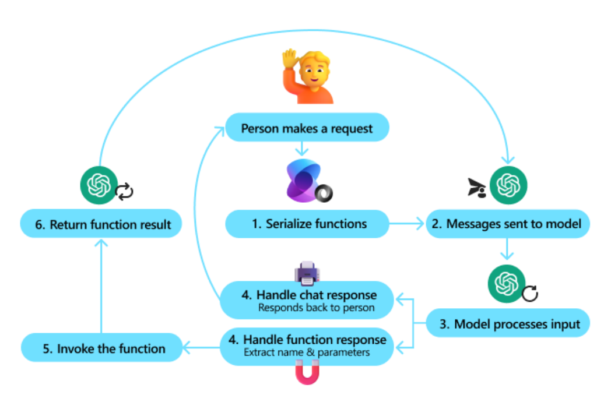

Function Calling
在 AI Agent 系统中，工具调用是实现自动化任务执行的关键机制，而 Function Calling（函数调用） 则是当前大模型平台中实现 Tool Use 最常见的一种方式。通过 Function Calling，大语言模型不仅能够理解用户需求，还可以按照预定义的结构生成函数调用请求，从而让系统自动执行对应的功能。简单来说，Function Calling 的核心思想是：让大语言模型输出结构化的函数调用信息，而不是普通文本，然后由系统根据这些信息执行具体操作。这种机制可以显著提高工具调用的稳定性和准确性，使 Agent 系统能够在复杂业务场景中可靠运行。

Function Calling 工作流程
在传统的大模型应用中，模型通常只会生成自然语言文本，例如回答问题或生成内容。但在 Function Calling 机制下，模型不仅可以生成文本，还可以生成函数调用结构。系统会根据这个结构去执行真实的函数，然后把执行结果再返回给模型继续推理。
Function Calling 的完整流程可以分为函数定义、模型决策、系统执行和结果回传几个阶段：
flowchart TD
define[系统定义函数名称、描述和参数结构]
request[用户提交任务请求]
define --> send[系统将函数定义与用户请求一起发送给模型]
request --> send
send --> decide[模型分析任务并判断是否需要调用函数]
decide --> needCall{需要调用函数？}
needCall -->|否| direct[模型生成普通文本回答]
direct --> final[返回完整回答]
needCall -->|是| args[模型按函数定义生成调用名称和参数]
args --> execute[系统定位并执行对应函数]
execute --> result[系统将函数结果返回给模型]
result --> reason[模型结合结果继续推理]
reason --> again{还需要调用函数吗？}
again -->|是| decide
again -->|否| final函数可以访问数据库、调用 API 或执行代码；实际执行始终由 Agent 系统完成，而不是让模型直接运行代码。
JSON Schema 定义
在 Function Calling 机制中，函数参数通常采用 JSON Schema 的形式进行定义。JSON Schema 是一种结构化数据描述标准，用于明确说明函数需要哪些参数、参数类型是什么以及哪些参数是必需的。通过使用 JSON Schema，系统可以向模型提供清晰的函数接口说明，使模型能够准确地生成调用参数。
一个典型的函数定义通常包含以下几个部分：
1）函数名称（name） 用于标识函数，例如 get_weather 、 query_order 等。 2）函数描述（description）
用于解释函数的功能，例如“根据城市名称查询天气信息”。 3）参数结构（parameters）
使用 JSON Schema 描述函数参数的结构、类型和含义。
下面是一个简单的函数定义示例：
{
"name": "query_order",
"description": "查询订单状态",
"parameters": {
"type": "object",
"properties": {
"order_id": {
"type": "string",
"description": "订单编号"
}
},
"required": ["order_id"]
}
}
当用户询问订单状态时，大语言模型可能会生成如下函数调用请求：
{
"name": "query_order",
"arguments": {
"order_id": "10234"
}
}
系统接收到这个请求后，就可以执行对应的函数逻辑，例如查询数据库并返回订单状态。
Function Calling 在 Agent 中的作用
Function Calling 在 Agent 系统中扮演着非常重要的角色，因为它解决了模型输出不稳定的问题。如果没有结构化调用机制，模型可能会用自然语言描述调用过程，例如“我将调用订单查询接口”。这种输出对于系统来说是难以解析和执行的。通过 Function Calling，模型可以直接生成标准化的函数调用结构，使系统能够稳定地解析并执行任务。
在实际工程中，Function Calling 还带来了几个重要优势。
首先，它可以保证参数格式正确。由于参数结构是由 JSON Schema 定义的，模型会按照结构生成数据，从而减少参数错误。其次，它可以提高工具调用准确率。模型在选择工具时会参考函数描述，从而更容易做出正确决策。再次，它可以提升系统安全性。模型只能调用系统预先定义的函数，无法执行任意代码。最后，它能够简化 Agent 架构实现。许多现代 Agent 框架（例如 LangChain、OpenAI Agents、 AutoGen 等）都直接基于 Function Calling 构建工具调用能力。因此，在当前的大模型应用开发中，Function Calling 已经成为实现 Agent 工具调用的标准方式之一。